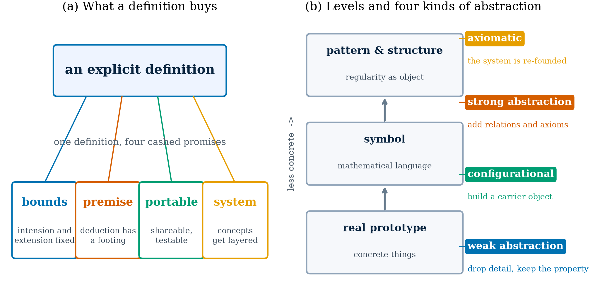

给一个概念下显式定义，到底买到了什么
以「数学抽象」的课程标准定义为例
提问原文 · The question
🗣️ Ask
从方法论角度论述一下，对一个概念给出明确、显式的定义的意义和重要性；之后以数学里的抽象思维定义作为实例讨论。

python3 scripts/make_figures.py definition 生成。
从方法论角度论述：明确、显式定义的意义与重要性 ## 一、明确、显式定义的方法论意义
1. 确定认知边界，消除歧义
在科学研究与知识建构中，一个概念若缺乏明确、显式的定义，就会导致理解上的模糊与交流中的歧义。方法论上，定义的功能在于划定概念的内涵与外延，使研究者与学习者能够准确地把握“讨论的对象是什么、不是什么”。没有清晰的定义，每一个使用该概念的人可能都在谈论不同的事物，讨论便失去了共同的基础。
2. 为推理与论证提供逻辑起点
定义是逻辑推理的基石。在形式化体系中，任何严谨的推理都必须从定义出发。正如在数学中，演绎推理“是基于公理、定义和符号，按照规定的法则进行命题证明或者公式推导”，定义构成了推理链条中不可动摇的出发点。没有定义，论证便无从立足。
3. 实现知识的可传递、可检验与可积累
显式定义使知识成为可公共交流的对象。明确了定义的知识，才能在不同研究者之间传递、被他人检验、被后续研究继承与发展。这构成了科学共同体知识积累的机制。若定义含糊，知识便难以被独立验证，更无法稳定地进入后续的理论建构。
4. 促进理论体系的结构化与系统化
在方法论层面，定义不仅服务于单个概念，更支撑着整个理论体系的建构。通过定义，概念之间建立起清晰的层级关系与逻辑联系，使理论从零散的命题上升为结构化的系统。数学公理化体系正是这一过程的典范：通过若干基本定义与公理，可以推导出整个理论大厦。
二、数学抽象思维的定义作为实例分析
1. 数学抽象的定义：从模糊到清晰
数学抽象是数学哲学的基本概念，指“从具体事物中分离本质属性以形成数学对象的思维过程”。课程标准进一步将其明确为：“舍去事物的一切物理属性，得到数学研究对象的素养。主要包括：从数量与数量关系、图形与图形关系中抽象出数学概念及概念之间的关系，从事物的具体背景中抽象出一般规律和结构，并用数学语言予以表征。”
这一显式定义的意义在于： 明确了对象：抽象的对象不是事物本身，而是事物中“数量关系与图形关系”这一侧面。 明确了操作：通过“舍去物理属性”“分离本质属性”等表述，清晰描述了抽象的过程。 明确了结果：抽象的结果是“数学概念及概念之间的关系”“一般规律和结构”，并以“数学语言”为载体。
2. 定义对数学教学的指导意义
有了明确的数学抽象定义，教育者才能有目的、有计划地培养学生的抽象能力。例如，在概念教学中，教师需要“让学生经历从事实到概念”的数学抽象过程，而非“掐头去尾烧中段”。这是因为，定义揭示了抽象的本质是“从具体事物中抽取出相对独立的各个方面、属性及关系”，因此教学不能绕过具体经验直接给出结论。
3. 定义对理论建构的支撑作用
数学抽象被划分为弱抽象、强抽象、构象化抽象和公理化抽象四种类型，每种类型均有对应的抽象法则。这种分类正是建立在清晰定义基础之上的理论深化。没有对“抽象”本身的明确定义，就无法展开对其内部结构的精细分析，更无法建立起系统的抽象理论。
4. 定义与认知发展的关联
数学抽象具有鲜明的层次性，可分为“简约阶段、符号阶段、普适阶段”。这一认识同样依赖于对“数学抽象”的明确定义。正是因为定义揭示了抽象是从“现实原型”到“符号”再到“一般模式”的递进过程，研究者才能进一步识别出抽象过程中的不同认知层次，并据此设计符合学生认知规律的教学策略。
三、结论
从方法论角度而言，对一个概念给出明确、显式的定义，其意义与重要性至少体现在四个层面：为认知划定边界，为推理提供起点，为知识传递创造条件，为理论建构奠定基础。数学抽象思维的定义作为实例，清晰地展示了：只有当“抽象”本身被明确定义后，人们才能系统地讨论抽象的层次、类型与教学策略，才能在共识的基础上推动理论的发展与实践的深化。没有这一明确定义，所谓“培养抽象素养”便只能停留在口号层面，而无法落实到可操作的教学设计之中。
延伸 · Where this reads on
- 上一课（47 轮）：从一头牛到泛函：一堂数学课的抽象阶梯—— 它给出「抽象」的例子，本页给出「抽象」的定义，两页互为对照。
- 如果要把「函数族 → 函数空间」真的算出来给学生看： 在候选函数空间中搜索「谁生成了数据」。
- 「换一个权重就是换一个空间」的严格版本： Jacobi 多项式。
- 正文引用的课标表述（“舍去事物的一切物理属性……”）来自 Agent 的检索摘录， 具体文件与版本未核对（常见出处是《普通高中数学课程标准（2017 年版 2020 年修订）》 及中国高考评价体系对”数学抽象”的界定）；引用前请回原文核对。
- 「弱抽象 / 强抽象 / 构象化抽象 / 公理化抽象」的四分法与”简约—符号—普适”三阶段 属于国内数学教育文献的常用切法，不是国际数学教育界（如 APOS、van Hiele）的同一套框架， 两者不要混用。
这条对谈没有点名任何书目；上一课的编者注里有一张完整的书目对照表： 从一头牛到泛函：一堂数学课的抽象阶梯 · 书目对照。